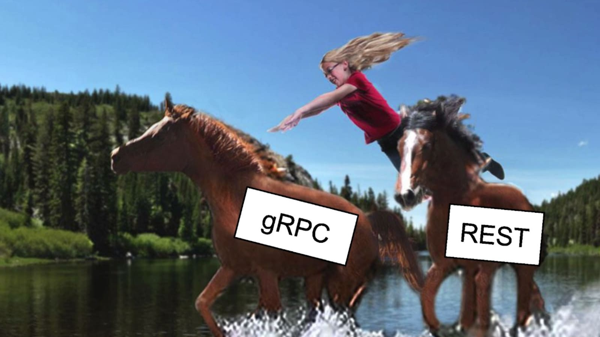
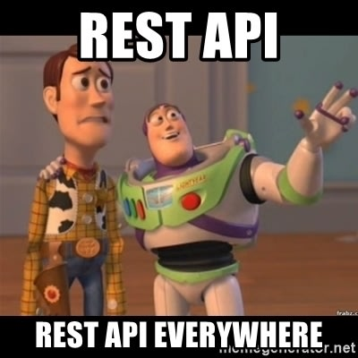
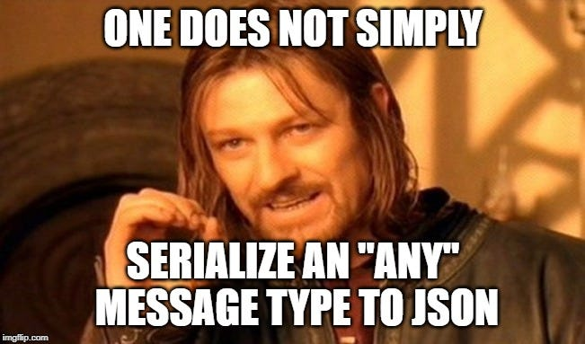
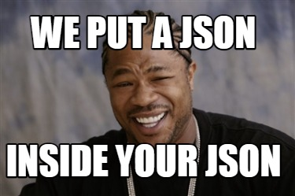
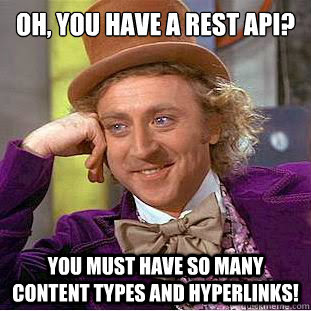
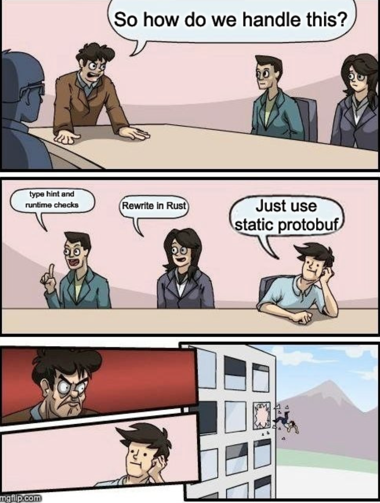

Quick gRPC
Ashu Pednekar
22 Sep 2024
Ashu Pednekar
22 Sep 2024
Ready to jump ship WSGI and join the microservices party? Let’s gRPC and roll!

https://ashutalks.us-cdp2.choreoapps.dev/quickgrpc/quickgrpc.slide#1
2




We'll build a simple crud service
Let's define the protobud in a .proto file
We start a proto file by specifying the syntax version, like so
syntax = "proto3";
Here's a link to the protobuf definition
service EmployeeService { rpc Create(EmployeeInp) returns (Employee); rpc List(Empty) returns (Employees); rpc Retrieve(EmployeeID) returns (Employee); rpc Delete(EmployeeID) returns (Empty); }
The service handles creating, listing, retrieving, updating, and deleting employee records.
Handles everything from adding a new hire to giving them the boot, with input as EmployeeInp and output as Employee—because even computers need paperwork.
syntax = "proto3"; message Empty{} message Employee { uint32 id = 1; string name = 2; uint32 dept_id = 3; string designation = 4; }
syntax = "proto3"; message Empty{} message Employee { uint32 id = 1; string name = 2; uint32 dept_id = 3; string designation = 4; } message EmployeeInp { string name = 1; uint32 dept_id = 2; string designation = 3; } message EmployeeID { uint32 id = 1; }
syntax = "proto3"; message Empty{} message Employee { uint32 id = 1; string name = 2; uint32 dept_id = 3; string designation = 4; } message EmployeeInp { string name = 1; uint32 dept_id = 2; string designation = 3; } message EmployeeID { uint32 id = 1; } message Employees { repeated Employee employees = 1; }
This is how it works
When working with protoc, think of it as the translator who turns your .proto files into code that your project can actually speak to.
protoc --<language>_out=<output_directory> <file>.proto does the trick, generating all the gRPC wrapper code you’ll need.
Here's a link to the docs
grpc.io/docs/languages/python/
12It's a simple tool that makes this process much nicer, where you just give it your proto and it spits out boilerplate server and client skeletal code
Another thing it does is put the protoc generated code in site packages so that you don't have to ship it along with your server code.
Note: This is a simple tool I wrote a few years ago. Suggestions/improvements welcome as PRs!
ashupednekar.github.io/quickgrpc/Getting%20Started/
13We wrote out proto file, with rpc's and their corresponding mmessages
Used the create_grpc_service command to generate the boilerplate code we'll need
Looked at proto file validations passed through from protoc
Few considerations
The quickgrpc library currently makes a few assumptions
These things can change, if there's enough interest... maybe a go/rust rewrite/language support
15We're using a python dictionary as our db
Adding empoyees to the db as they come in
Note the pb2 snippets, this is where we interact with code generated by protoc
Since our 'DB' is just a python dict, we need to convert that to the pb2 compatible object, that's what this is
Note: none of these are best practices for business logic, just an illustration
19What we've covered so far is only unary, which is the most analogous to REST apis
gRPC also supports
As you saw, there were a few bugs in our service
.employees which is the repeated message as per our protobuf.note: gRPC is not a silver bullet, it's meant for service to service communication alongside pubsub, most browsers don't support it directly
25